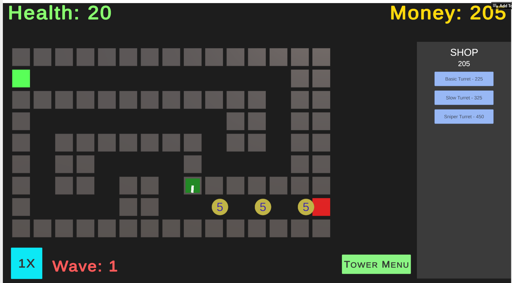
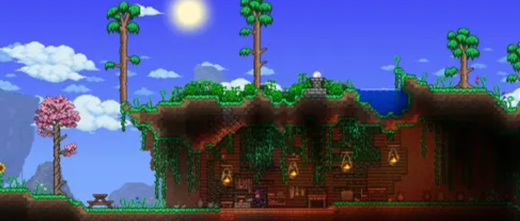

Starting Development on a Tower Defence Game
Published: November 10, 2025 | Author: Derek Keene
Creating a tower defence game is an excellent way to learn game development fundamentals while building something genuinely fun. Tower defence games combine strategy, resource management, and real-time decision-making into an engaging experience. In this post, I'll share my journey starting development on my first tower defence project, including the core systems I needed to build, the challenges I faced, and the lessons learned along the way.
The first step was planning the game architecture. I needed to establish core systems for tower placement and management, enemy wave spawning, pathfinding algorithms, and a damage/health system. Learning to structure code for a game is quite different from web development—performance and organization become critical. I started with a simple grid-based system for tower placement and implemented a state machine to handle different game phases like preparation, combat, and victory/defeat states. The iterative approach of building a minimum viable product first, then expanding features, proved invaluable in keeping the scope manageable while maintaining momentum.
Here's a table showing the core game systems and their development status:
| Game System | Status | Priority |
|---|---|---|
| Tower Placement | Complete | Critical |
| Enemy Pathfinding | In Progress | Critical |
| Weapon Systems | Planning | High |
Exploring the World of Terraria
Published: November 8, 2025 | Author: Derek Keene
Terraria is a 2D sandbox adventure game that captured my imagination from the moment I started playing. While it shares some similarities with Minecraft, Terraria offers a distinctly different experience with its focus on exploration, combat, and crafting in a 2D world filled with secrets and challenges. What makes Terraria special is its incredible depth—there's always something new to discover, whether you're delving into underground caverns searching for rare ores or battling fearsome bosses. The game's pixel art aesthetic combined with its engaging gameplay loop makes it endlessly replayable.
One of the things I appreciate most about Terraria is how it respects player agency and exploration. Rather than holding your hand, the game encourages you to experiment and discover mechanics on your own. The variety of weapons, armor, and accessories means there are countless ways to approach combat. Boss fights are genuinely challenging and rewarding, pushing you to gather resources, prepare strategies, and execute carefully. The community around Terraria remains vibrant and welcoming, with speedrunners, content creators, and casual players all contributing to its longevity. If you haven't experienced Terraria yet, I highly recommend giving it a try.